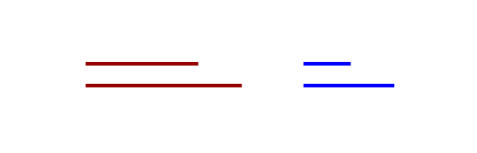
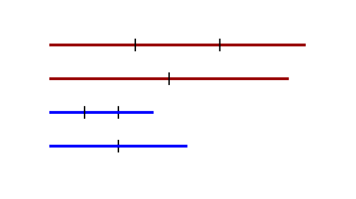

I think it is well-known among people who like math that the Greeks were not that far from the beginnings of what we now call calculus or analysis – for example, Archimedes is understood the convergence of geometric series and the method of exhaustion is very close to what we now call limits. If you squint, you'll even find integrals in his work.
In an undergraduate math history course, I was pleasantly surprised by some of these examples. However, I haven't found anywhere on the web which collects them – that is the purpose of this project. On this page you will find the details of the similarity between an early definition of equality of ratios and a millenia-later foundational definition of the real numbers.
Comments? Please email me: rsbowen@gmail.com
Eudoxus of Cnidus was a 4th- and 3rd- century BC Greek mathematician. In Euclid, he gives a condition for the equality of ratios of magnitudes in terms of conditions only on natural numbers. Richard Dedekind was a 19th- and 20th- century German mathematician famous for the ‘‘Dedekind cut’’, a formal construction of the reals from the rationals.
In the context of lengths, which is a first-class object in Greek mathematics, there is no obvious ‘‘base unit’’ (like the inch), so a single line can't be said to have rational or irrational length. It is only in finding the ratios of lengths that this distinction appears. Euclid's algorithm can be used to find a unit length for two longer lengths, so that each of the longer lengths is an integer ratio of the unit length. But it is not always possible to find such a unit length – in contemporary language it is only possible if the ratio of the lengths is rational. However, the Greeks did have a definition for comparing two ratios (that is, four lines, or two sets of two lines) for equality – even in the incommensurable case –, and this is given by Eudoxus.
Euclid states what I call the Eudoxus condition as follows (Boyer, Carl B. The History of the Calculus and Its Conceptual Development. New York: Dover, 1959. 31.):
Magnitudes are said to be in the same ratio, the first to the second and the third to the fourth, when, if any equimultiples whatever be taken of the first and third, and any equimultiples whatever of the second and fourth, the former equimultiples alike exceed, are alike equal to, or alike fall short of, the latter equimultiples respectively taken in the corresponding order
I find this a little difficult to parse, so here is an example. Suppose I have two sets of lines – red and blue – and I'd like to know if the red lines’ lengths are in the same ratio as the blue:
|  |
I can pick any pair of positive integers, \(x\) and \(y\). I repeat the shorter red line \(x\) times and the shorter blue line \(x\) times. I repeat the longer red line \(y\) times and the longer blue line \(y\) times. Here is the above example with \(x=3\) and \(y=2\).
|  |
In this case the repeated-short-red line is longer than the repeated-long-red-line, but the repeated-short-blue-line is still shorter than the repeated-long-blue-line. This means the ratios are unequal. If I can find no such pair \(x,y\), then the ratios are equal. In contemporary notation, we might say:
\[ \frac{a}{b} = \frac{c}{d} \leftrightarrow \left [ \forall x \forall y \left( xa \geq yb \leftrightarrow xc \geq yd \right ) \right ] \]
for positive integers \(x\) and \(y\). A short proof of this fact using modern language follows. Forward direction: let \(x\) and \(y\) be arbitrary integers and \(a/b = c/d\). Then:
\[ \begin{align*} \frac{a}{b} &= \frac{c}{d}\\ \frac{xa}{yb} &= \frac{xc}{yd} \end{align*} \]
This identity is useful in the following chain of biconditionals:
\[ xa \geq yb \leftrightarrow \frac{xa}{yb} \geq 1 \leftrightarrow \frac{xc}{yd} \geq 1 \leftrightarrow xc \geq yd \]
This completes the forward direction. The reverse direction can be proven by contraposition. Let \(a/b \neq c/d\). Without loss of generality, \(a/b < c/d\). Then is some rational \(q=m/n\), where \(m\) and \(n\) are integers, which lies between them: \(a/b < m/n < c/d\). We may derive:
\[ a/b < m/n \rightarrow na < mb.\]
And simultaneously
\[ c/d > m/n \rightarrow nc > md.\]
Then \((n,m)\) is a witness which shows the existence of a pair \((x,y)\) where
\[ \exists x \exists y \left ( xa \geq yb \not \leftrightarrow xc \geq yd \right ). \]
The Dedekind construction of the real numbers is to identify them with subsets \(S\) of the rationals subject to the property that \(q \in S\) and \(p<q\) implies \(p \in S\). We can identify the real with the obvious limit point; for example, \(\sqrt{2}\) is identified with the set of all rationals whose square is less than 2.
Eudoxus doesn't give a single object which we might call a real – only a way of comparing them. Such an object is not needed, because philosophically the Greeks didn't consider these ratios to be first-class objects. But suppose we want to look at Eudoxus through this ontological lens. How might we turn an equivalence relation into an object? Well, the Eudoxus condition for a pair of ratios asks us to do an (infinite) sequence of tests, one for each pair drawn from the positive integers, and compare all these results. So it seems to make sense to consider an infinite table of these results as a single object, and comparison between such objects is exactly comparison of each entry in the table. For any ratio, we might think of an infinite table: each row corresponds to to an integer by which we will repeat the shorter line; each column to an integer by which we will repeat the longer line. In each cell of the table we place ‘‘\(<\)’’ or ‘‘\(\geq\)’’, according the new relationship (so in the \(1,1\) cell we place \(<\)). This we identify with the ratio. Eudoxus’ condition that two ratios are equal is exactly that the two corresponding tables are identical. The unification of these two formulations is straightforward: if and only if the cell in row \(m\) and column \(n\) says ‘‘\(<\)’’ in the Eudoxus table, then add \(m/n\) to Dedekind's set. For example, consider two lines in the ratio \(1:\sqrt{2}\). Any value where
\[1\cdot m < \sqrt{2} \cdot n\]
must have
\[m^2 < 2n^2\]
and thus
\[(m/n)^2 < 2\]
which is exactly the condition for \(m/n\) to be in \(\sqrt{2}\)'s Dedekind cut.
The Eudoxus stack-\(m\)-and-\(n\) times step can be seen as a comparison to \(m/n\), and the fact that Eudoxus requires the same relationship for all pairs of integers can be seen as the equivalent of the downward-closure condition. Once we introduce the idea that we should have representative objects built out of (infinitely many) integer- or rational- like objects which we identify with reals (an idea which is perhaps ontological or philosophical, rather than mathematical), the actually mathematics follows quickly – discovering the above equivalence is not difficult.